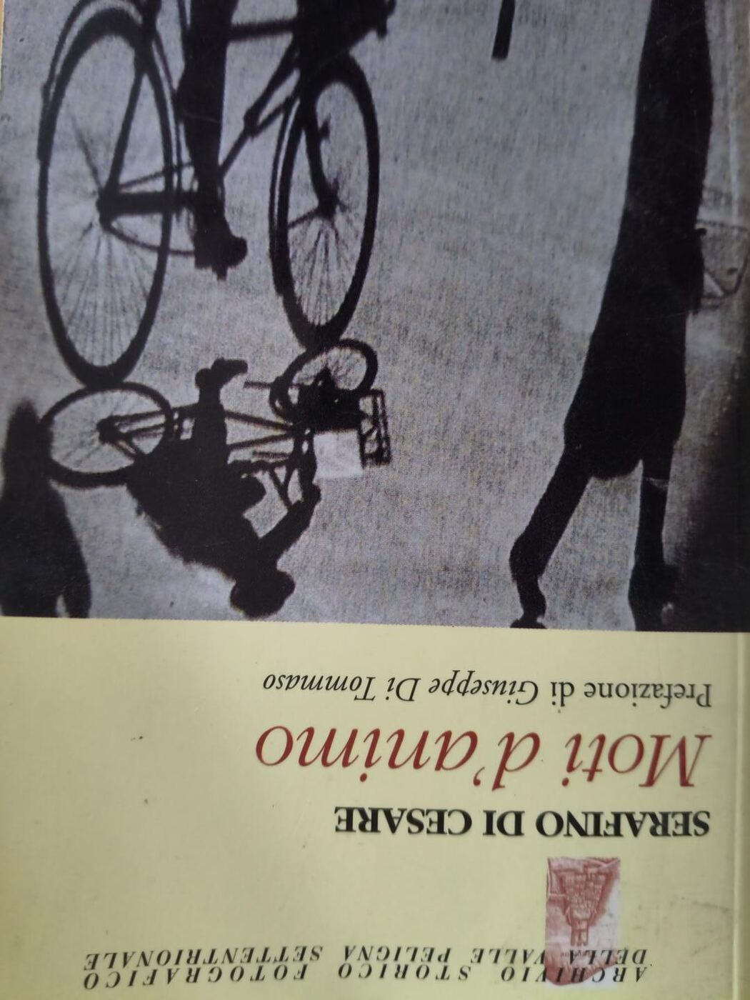
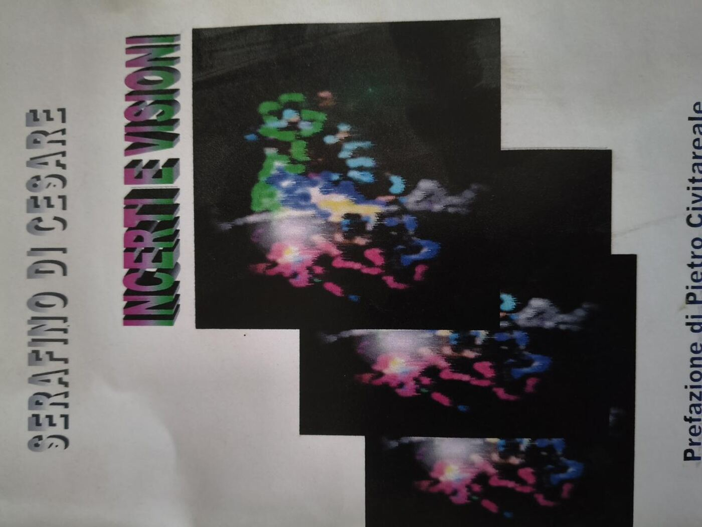
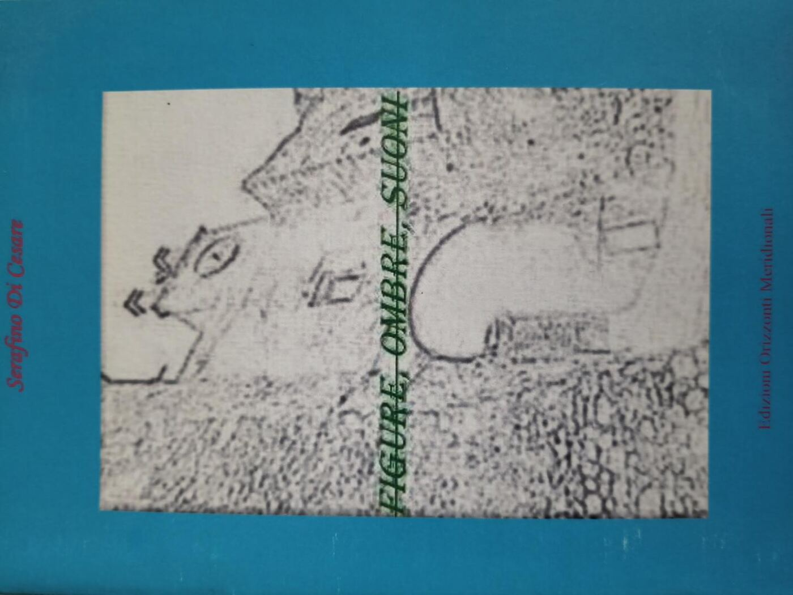
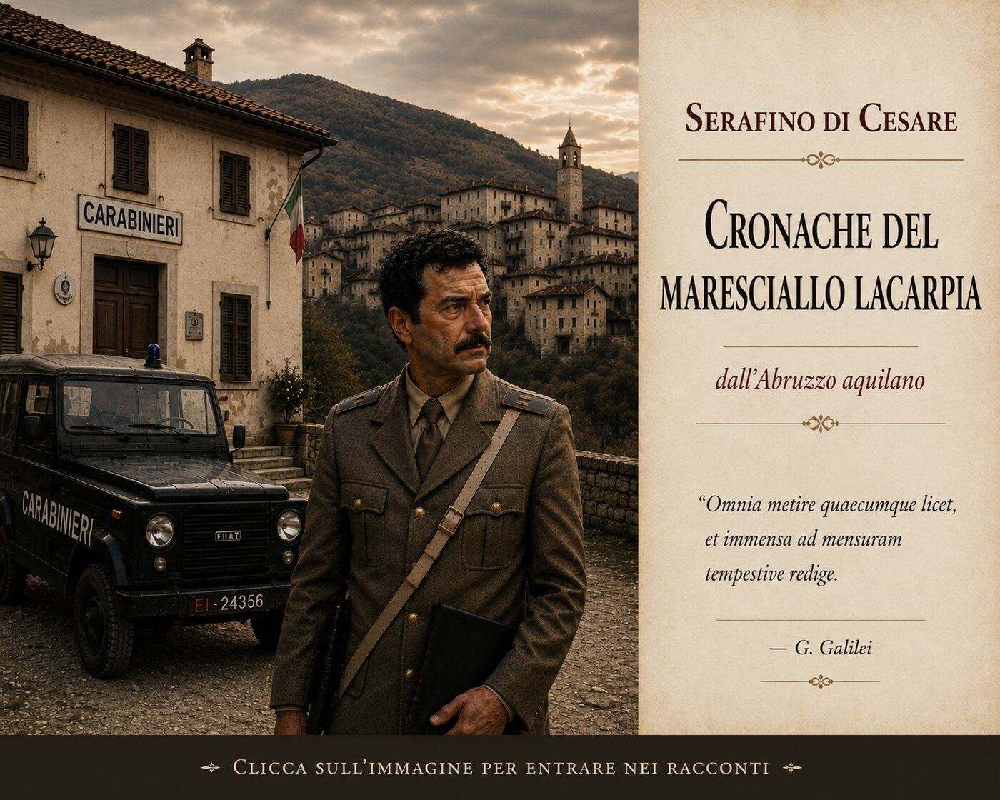
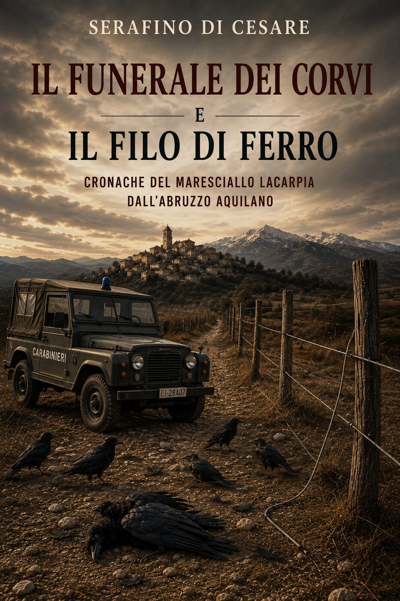
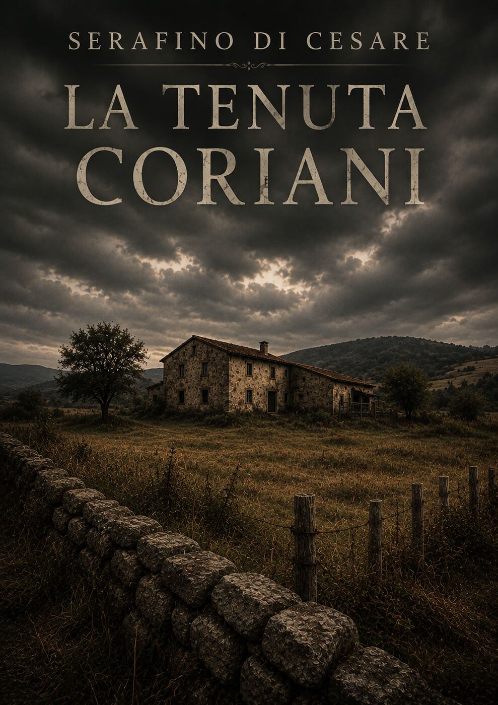
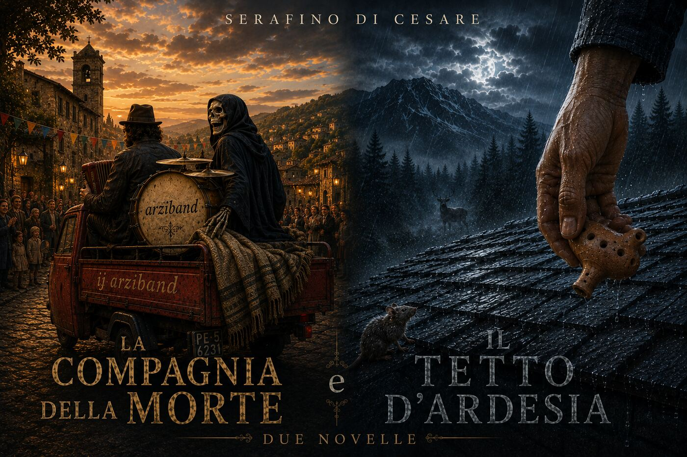
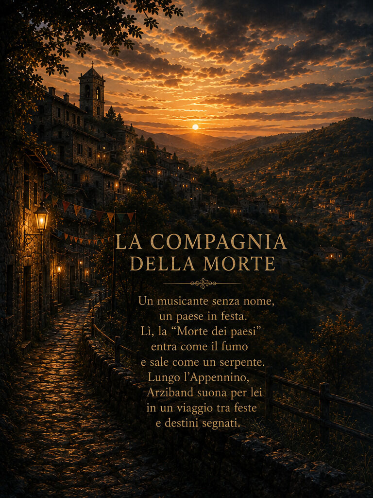
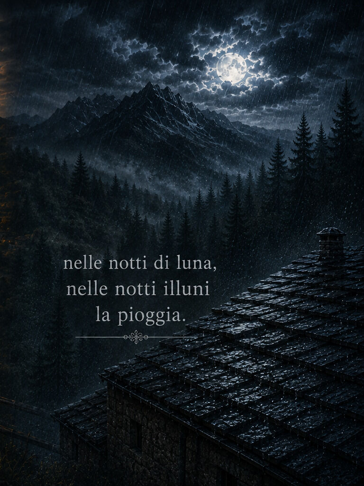

Popoli Terme · Abruzzo
serafinodicesare1@virgilio.it
Le ultime poesie scritte prima di volgersi alla prosa: versi ellittici, prefati da Pietro Civitareale.

1999Moti d'animo
Università Popolare di Roma

2007Incerti e visioni
I Quaderni dell'Ortica, Forlì

2009Figure, ombre, suoni
Edizioni Orizzonti Meridionali, Cosenza

Un romanzo ambientato nel paese d'origine dell'autore, in Abruzzo, con protagonista il maresciallo Lacarpia — la storia che ha dato inizio a tutto, tenuta da parte per quasi due decenni prima di essere finalmente conclusa.
Una serie di racconti ambientati sull'Appennino abruzzese negli anni Settanta, con lo stesso maresciallo Lacarpia protagonista — indagini e vita di paese in un'epoca e in un paesaggio precisi.
Storie ambientate nella Valle Peligna e nell'Abruzzo aquilano.

Fascicolo N. 01Il Funerale dei Corvi e Il Filo di Ferro

La Tenuta Coriani


NovellaUn musicante senza nome, un paese in festa. Lungo l'Appennino, Arziband suona per lei in un viaggio tra feste e destini segnati.
In uscita su Amazon KDP
NovellaNelle notti di luna, nelle notti illuni, la pioggia.
In uscita su Amazon KDP